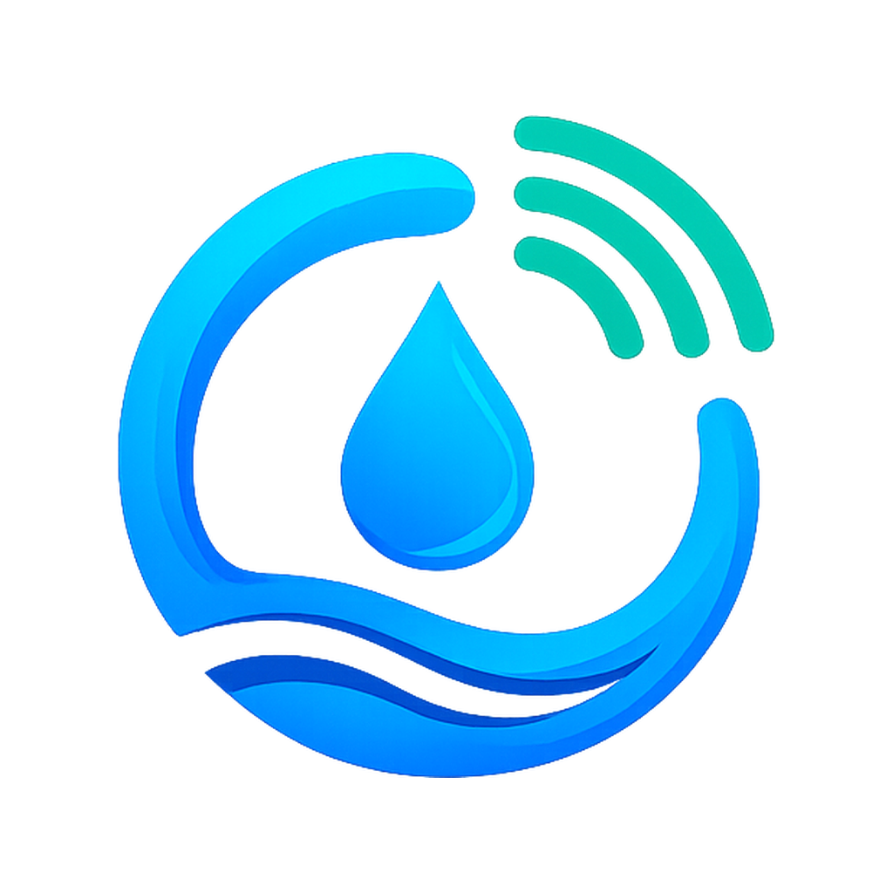
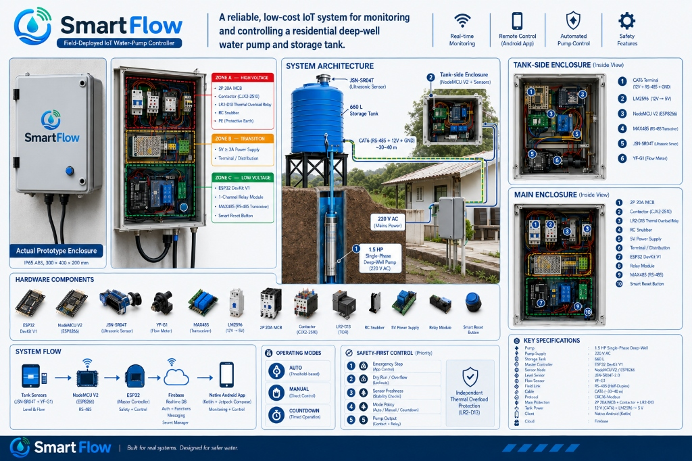

SmartFlow
Field Installed (1 Site)
Automated controller for a residential deep-well water pump
Solo developer
Leon, Iloilo · Residential Deep-Well Automation

Deep-well water pumps easily burn out if they run dry or run too long unattended. To solve this for my home in Iloilo, I built a two-node automation system: an ESP32 master connected to a 1.5 HP motor contactor, and an ESP8266 at the 660L water tank with an ultrasonic sensor. They communicate over a 40-meter CAT6 wire using RS-485 to avoid motor electrical interference. Even if the home Wi-Fi disconnects, local firmware logic ensures the pump shuts off automatically before running dry.
- • 40-meter wired RS-485 link with CRC checks to eliminate electrical noise from the motor.
- • Local firmware safety timers that shut down the motor within 15 seconds if dry-run conditions are detected.
- • Native Android app built with Kotlin and Jetpack Compose for Bluetooth setup and tank level monitoring.
ESP32
ESP8266
C++
Kotlin
Jetpack Compose
RS-485
Firebase